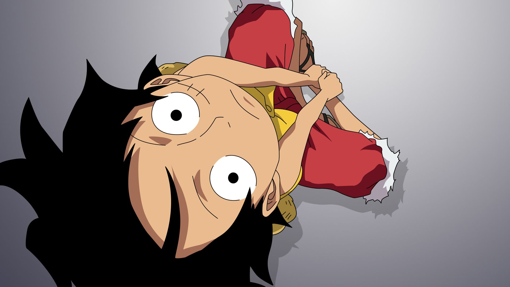

Lee Muraa

Summary
Motivated and skilled software developer with experience in web development and programming. Excited to leverage skills and knowledge to contribute to the development of innovative software products.
Education
-
Bachelor of Science in Information Technology
2020 - 2023
Zetech University, Ruiru, Kenya
-
Secondary Education
2016 - 2019
Ontulili Boys HighSchool, Nanyuki, Kenya
-
Primary Education
2004 - 2015
St. Paul's Primary School, Meru, Kenya
Work Experience
-
Assistant ICT Officer - Nyambene Hospital.
December 2023-Present
- Troubleshooting network issues, ensuring connectivity across various departments, and implementing necessary upgrades to enhance efficiency.
- Developed proficiency in dealing with both hardware and software aspects of ICT infrastructure.
- Collaborate with other ICT professionals to streamline processes and optimize system performance.
-
ICT Internship - JKUAT.
May 2023-July 2023
- Providing technical assistance to hospital staff.
- Network administration.
- Hardware maintenance.
- Developing Hospital Environment Friendly System Programs.
- Data management.
- User training and support.
Skills
- Software Development: ⭐⭐⭐⭐
- Continuous Learning and Adaptability:⭐⭐⭐⭐⭐
- Innovation and Creativity:⭐⭐⭐⭐⭐
- Communication and Collaboration:⭐⭐⭐⭐
Awards and Certifications
Other